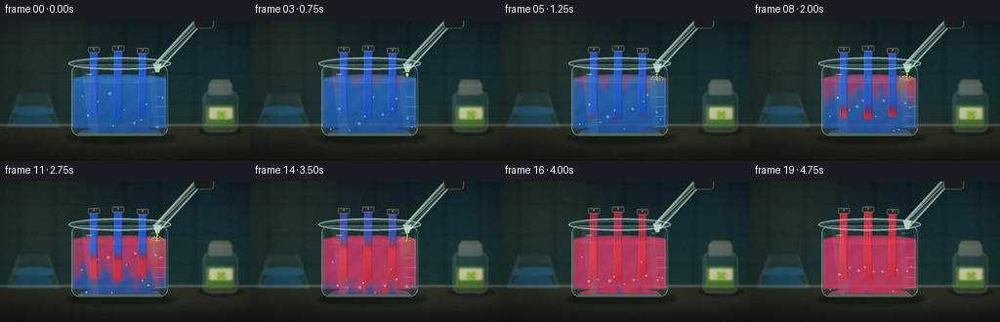
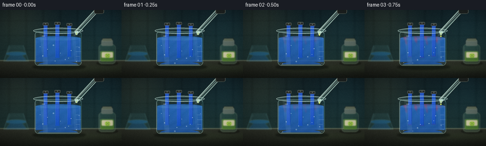

CODING AGENTS AS PIXEL WORLD MODELS
traex/DeepSeek-V4.1-Flash · material_0035
点击播放 · 原生 RGB 像素
逐轮保存的候选
回放视频、检查图与代码变化。
每份候选均可单独播放。实际图片检查记录在下方工具轨迹中。
候选 01播放与检查图
点击播放 · 原生 RGB 像素


展开代码变化
--- 上一保存版本
+++ 本次保存版本
@@ -0,0 +1,490 @@
+from pathlib import Path
+
+import numpy as np
+from PIL import Image, ImageDraw, ImageFilter
+
+import artifact_io
+
+
+W, H, N, FPS = 256, 144, 20, 4.0
+S = 4
+RNG = np.random.default_rng(3507)
+
+
+def smoothstep(a, b, x):
+ q = np.clip((x - a) / (b - a), 0.0, 1.0)
+ return q * q * (3.0 - 2.0 * q)
+
+
+def rgba(color):
+ if len(color) == 3:
+ return color + (255,)
+ return color
+
+
+def layer():
+ return Image.new("RGBA", (W * S, H * S), (0, 0, 0, 0))
+
+
+def px(value):
+ return int(round(value * S))
+
+
+def line(draw, points, fill, width=1):
+ draw.line([(px(x), px(y)) for x, y in points], fill=rgba(fill), width=max(1, px(width)))
+
+
+def ellipse(draw, box, fill=None, outline=None, width=1):
+ draw.ellipse(tuple(px(v) for v in box), fill=rgba(fill) if fill else None,
+ outline=rgba(outline) if outline else None, width=px(width))
+
+
+def rounded_rect(draw, box, radius, fill=None, outline=None, width=1):
+ draw.rounded_rectangle(tuple(px(v) for v in box), radius=px(radius),
+ fill=rgba(fill) if fill else None,
+ outline=rgba(outline) if outline else None,
+ width=px(width))
+
+
+def polygon(draw, points, fill):
+ draw.polygon([(px(x), px(y)) for x, y in points], fill=rgba(fill))
+
+
+def composite(base, overlay, blur=0.0):
+ if blur:
+ overlay = overlay.filter(ImageFilter.GaussianBlur(blur * S))
+ return Image.alpha_composite(base, overlay)
+
+
+def make_background():
+ yy, xx = np.mgrid[0:H * S, 0:W * S]
+ x = xx / S
+ y = yy / S
+
+ top = np.array([14.0, 31.0, 38.0])
+ bottom = np.array([24.0, 47.0, 48.0])
+ wall_t = np.clip(y / 108.0, 0, 1)[..., None]
+ wall = top * (1 - wall_t) + bottom * wall_t
+
+ warm = np.exp(-(((x - 34) / 64) ** 2 + ((y - 18) / 58) ** 2))
+ cool = np.exp(-(((x - 224) / 54) ** 2 + ((y - 34) / 62) ** 2))
+ wall += warm[..., None] * np.array([18, 15, 7])
+ wall += cool[..., None] * np.array([4, 11, 13])
+
+ tile_x = 0.4 * smoothstep(0.72, 1.0, np.abs(((x + 17) % 36) - 18) / 18)
+ tile_y = 0.28 * smoothstep(0.78, 1.0, np.abs(((y + 8) % 31) - 15.5) / 15.5)
+ wall -= (tile_x + tile_y)[..., None] * np.array([7, 10, 10])
+
+ counter = y >= 106
+ counter_t = np.clip((y - 106) / 38, 0, 1)[..., None]
+ counter_col = np.array([42.0, 47.0, 40.0]) * (1 - counter_t) + np.array([18.0, 23.0, 20.0]) * counter_t
+ wall = np.where(counter[..., None], counter_col, wall)
+
+ bevel = np.exp(-((y - 107.0) / 1.15) ** 2)
+ wall += bevel[..., None] * np.array([46, 54, 45])
+ lower_glow = np.exp(-((y - 123.0) / 9.0) ** 2) * smoothstep(35, 140, x)
+ wall += lower_glow[..., None] * np.array([6, 9, 4])
+
+ grain = RNG.normal(0, 2.1, (H * S, W * S, 1))
+ wall = np.clip(wall + grain, 0, 255)
+ return Image.fromarray(wall.astype(np.uint8)).convert("RGBA")
+
+
+def draw_flask(img):
+ ov = layer()
+ d = ImageDraw.Draw(ov, "RGBA")
+ polygon(d, [(19, 74), (49, 74), (61, 109), (7, 109)], (110, 197, 205, 19))
+ polygon(d, [(25, 91), (43, 91), (56, 108), (12, 108)], (34, 104, 164, 92))
+ line(d, [(19, 74), (7, 109)], (148, 218, 218, 82), 1.2)
+ line(d, [(49, 74), (61, 109)], (148, 218, 218, 72), 1.2)
+ line(d, [(7, 109), (61, 109)], (166, 225, 219, 92), 1.3)
+ ellipse(d, (12.5, 88.5, 55.5, 96.5), fill=(38, 122, 181, 120))
+ line(d, [(21, 78), (16, 91)], (211, 246, 238, 50), 1.0)
+ return composite(img, ov, 1.0)
+
+
+def draw_lime_bottle(img):
+ ov = layer()
+ d = ImageDraw.Draw(ov, "RGBA")
+ ellipse(d, (203, 108, 249, 118), fill=(4, 8, 7, 95))
+ rounded_rect(d, (207, 72, 244, 114), 8, fill=(98, 153, 121, 46),
+ outline=(178, 213, 179, 92), width=1.2)
+ rounded_rect(d, (213, 63, 238, 76), 3, fill=(194, 196, 173, 96),
+ outline=(228, 229, 204, 105), width=0.8)
+ rounded_rect(d, (215, 60, 236, 66), 2, fill=(99, 109, 91, 220))
+ rounded_rect(d, (210, 87, 241, 109), 5, fill=(85, 138, 47, 185))
+ line(d, [(211, 88), (211, 107)], (220, 244, 119, 45), 1.0)
+ rounded_rect(d, (214, 89, 238, 101), 2, fill=(224, 219, 178, 224))
+ ellipse(d, (221, 92, 232, 101), fill=(143, 193, 52, 255))
+ line(d, [(226.5, 92), (226.5, 100)], (226, 235, 133, 230), 0.65)
+ line(d, [(221.5, 96.5), (231.5, 96.5)], (226, 235, 133, 220), 0.65)
+ line(d, [(223, 93.5), (230, 99.5)], (85, 139, 45, 140), 0.45)
+ line(d, [(230, 93.5), (223, 99.5)], (85, 139, 45, 140), 0.45)
+ line(d, [(210, 77), (210, 108)], (238, 255, 231, 48), 1.0)
+ line(d, [(241, 78), (241, 108)], (16, 34, 24, 54), 0.8)
+ return composite(img, ov, 0.8)
+
+
+def draw_shadow(img):
+ ov = layer()
+ d = ImageDraw.Draw(ov, "RGBA")
+ ellipse(d, (68, 114, 181, 127), fill=(1, 7, 6, 118))
+ ellipse(d, (81, 117, 169, 124), fill=(2, 12, 10, 135))
+ return composite(img, ov, 1.7)
+
+
+def beaker_geometry():
+ left, right, top, bottom = 72.0, 173.0, 42.0, 118.0
+ surface = 59.5
+ cx = (left + right) / 2
+ return left, right, top, bottom, surface, cx
+
+
+def draw_beaker_back(img):
+ left, right, top, bottom, surface, _ = beaker_geometry()
+ ov = layer()
+ d = ImageDraw.Draw(ov, "RGBA")
+ rounded_rect(d, (left + 1, top + 3, right - 1, bottom), 8,
+ fill=(122, 190, 190, 12), outline=(169, 228, 224, 34), width=1.0)
+ ellipse(d, (left - 2, top - 4, right + 2, top + 8),
+ fill=(151, 216, 216, 22), outline=(201, 241, 233, 78), width=1.3)
+ ellipse(d, (left + 3, top - 1, right - 3, top + 5),
+ fill=(22, 51, 55, 35), outline=(225, 250, 242, 42), width=0.7)
+ return composite(img, ov)
+
+
+def liquid_color_frame(t, x, y):
+ left, right, top, bottom, surface, _ = beaker_geometry()
+ p = smoothstep(0.14, 0.94, t)
+ depth = np.clip((y - surface) / (bottom - surface), 0, 1)
+ impact_x = 160.0
+
+ front = p * 1.18
+ wave = (0.11 * np.sin(x * 0.29 + t * 8.4) +
+ 0.07 * np.sin(x * 0.58 - y * 0.18 + t * 5.1) +
+ 0.04 * np.cos(x * 0.14 + y * 0.37 - t * 6.3))
+ vertical = smoothstep(-0.18, 0.34, front - depth + wave)
+ radial = np.exp(-(((x - impact_x) / (29 + 46 * p)) ** 2 +
+ ((y - 66) / (19 + 40 * p)) ** 2))
+ acid = np.clip(0.86 * vertical + 0.55 * radial * p, 0, 1)
+ acid *= smoothstep(0.03, 0.2, t)
+
+ swirl = 0.5 + 0.5 * np.sin(x * 0.23 + y * 0.31 + t * 8.2 + np.sin(y * 0.19))
+ blue = np.array([35.0, 104.0, 191.0])
+ deep_blue = np.array([18.0, 66.0, 145.0])
+ rose = np.array([201.0, 49.0, 92.0])
+ red = np.array([232.0, 62.0, 72.0])
+ base = blue * (1 - 0.55 * depth[..., None]) + deep_blue * (0.55 * depth[..., None])
+ reacted = rose * (1 - 0.4 * depth[..., None]) + red * (0.4 * depth[..., None])
+ color = base * (1 - acid[..., None]) + reacted * acid[..., None]
+ color += (swirl[..., None] - 0.45) * np.array([5, 4, 7])
+
+ plume = np.exp(-(((x - (impact_x - 3 * np.sin(t * 5))) / 8.5) ** 2 +
+ ((y - 66) / 13.0) ** 2))
+ plume *= smoothstep(0.18, 0.32, t) * (1 - smoothstep(0.65, 0.95, t))
+ color = color * (1 - 0.28 * plume[..., None]) + np.array([180, 224, 61]) * (0.28 * plume[..., None])
+ return color, acid
+
+
+def draw_liquid(img, t):
+ left, right, top, bottom, surface, _ = beaker_geometry()
+ yy, xx = np.mgrid[0:H * S, 0:W * S]
+ x = xx / S
+ y = yy / S
+
+ inside = (x >= left + 2.1) & (x <= right - 2.1) & (y >= surface) & (y <= bottom - 2.2)
+ bottom_rx = 41.0
+ bottom_ry = 6.2
+ cx = (left + right) / 2
+ rounded_bottom = ((x - cx) / bottom_rx) ** 2 + ((y - (bottom - 3.0)) / bottom_ry) ** 2 <= 1
+ bottom_zone = y > bottom - 8.0
+ inside &= (~bottom_zone) | rounded_bottom
+
+ color, acid = liquid_color_frame(t, x, y)
+ alpha = np.where(inside, 208, 0).astype(np.float32)
+ edge = smoothstep(0.0, 1.3, np.minimum(x - left - 2.1, right - 2.1 - x))
+ edge *= smoothstep(0.0, 1.2, bottom - 2.2 - y)
+ alpha *= np.clip(edge, 0, 1)
+
+ surface_ellipse = (((x - cx) / 47.0) ** 2 + ((y - surface) / 4.4) ** 2) <= 1
+ alpha = np.where(surface_ellipse & (y < surface + 2), np.maximum(alpha, 178), alpha)
+ arr = np.zeros((H * S, W * S, 4), dtype=np.uint8)
+ arr[..., :3] = np.clip(color, 0, 255).astype(np.uint8)
+ arr[..., 3] = np.clip(alpha, 0, 255).astype(np.uint8)
+ return composite(img, Image.fromarray(arr)), acid
+
+
+def paper_texture(width, height, xseed):
+ yy, xx = np.mgrid[0:height, 0:width]
+ fine = RNG.normal(0, 3.5, (height, width))
+ fibers = 2.4 * np.sin(xx * 1.7 + yy * 0.23 + xseed) + 1.6 * np.sin(xx * 0.35 - yy * 1.2)
+ vignette = -5 * ((xx - width / 2) / max(width / 2, 1)) ** 2
+ return fine + fibers + vignette
+
+
+def draw_papers(img, t):
+ left, right, top, bottom, surface, _ = beaker_geometry()
+ p = smoothstep(0.16, 0.94, t)
+ centers = [96.0, 121.0, 146.0]
+ widths = [9.0, 9.5, 9.0]
+ heights = [69.0, 72.0, 67.0]
+ tops = [31.0, 29.5, 32.0]
+ out = img
+
+ for idx, (cx, pw, ph, ptop) in enumerate(zip(centers, widths, heights, tops)):
+ x0 = int(round((cx - pw / 2) * S))
+ x1 = int(round((cx + pw / 2) * S))
+ y0 = int(round(ptop * S))
+ y1 = int(round((ptop + ph) * S))
+ pw_px, ph_px = x1 - x0, y1 - y0
+ yy, xx = np.mgrid[0:ph_px, 0:pw_px]
+ world_y = ptop + yy / S
+ world_x = cx - pw / 2 + xx / S
+ depth = np.clip((world_y - surface) / max(1.0, (ptop + ph - surface)), 0, 1)
+ waviness = (0.055 * np.sin(world_x * 2.2 + idx * 1.8) +
+ 0.035 * np.sin(world_x * 4.1 - world_y * 0.15))
+ reaction = smoothstep(-0.08, 0.24, p * 1.18 - (1.0 - depth) + waviness)
+ reaction *= smoothstep(0.09, 0.18, t)
+ blue = np.array([35.0, 85.0, 191.0])
+ violet = np.array([103.0, 58.0, 169.0])
+ red = np.array([214.0, 49.0, 62.0])
+ paper = blue * (1 - reaction[..., None]) + violet * reaction[..., None] * (1 - reaction[..., None]) * 0.55
+ paper = paper * (1 - reaction[..., None]) + red * reaction[..., None]
+ wet = smoothstep(0.25, 1.0, depth)[..., None] * np.array([-16, -9, -8])
+ paper += wet
+ tex = paper_texture(pw_px, ph_px, idx * 2.7)
+ paper += tex[..., None]
+
+ # Slightly irregular, fibrous paper edges.
+ alpha = np.full((ph_px, pw_px), 255.0)
+ left_edge = 1.2 + 0.65 * np.sin(yy / (2.4 * S) + idx)
+ right_edge = 1.0 + 0.55 * np.sin(yy / (2.1 * S) + idx + 1.7)
+ alpha[xx < left_edge] = 0
+ alpha[xx > pw_px - 1 - right_edge] = 0
+ alpha[:2, :] *= 0.7
+ alpha[-2:, :] *= 0.75
+ arr = np.zeros((ph_px, pw_px, 4), dtype=np.uint8)
+ arr[..., :3] = np.clip(paper, 0, 255).astype(np.uint8)
+ arr[..., 3] = np.clip(alpha, 0, 255).astype(np.uint8)
+ patch = Image.fromarray(arr)
+ out.alpha_composite(patch, (x0, y0))
+
+ ov = layer()
+ d = ImageDraw.Draw(ov, "RGBA")
+ line(d, [(cx - pw / 2 + 0.7, ptop + 1), (cx - pw / 2 + 0.7, ptop + ph - 2)],
+ (205, 227, 255, 28), 0.65)
+ line(d, [(cx + pw / 2 - 1.1, ptop + 1), (cx + pw / 2 - 1.1, ptop + ph - 2)],
+ (21, 29, 58, 65), 0.7)
+ out = composite(out, ov)
+
+ # Binder clips at the rim give the strips a clear physical support.
+ ov = layer()
+ d = ImageDraw.Draw(ov, "RGBA")
+ rounded_rect(d, (cx - pw / 2 - 1.5, ptop - 4.0, cx + pw / 2 + 1.5, ptop + 2.0),
+ 1.4, fill=(39, 43, 42, 242), outline=(130, 139, 130, 170), width=0.65)
+ ellipse(d, (cx - 1.1, ptop - 2.7, cx + 1.1, ptop - 0.5),
+ fill=(162, 171, 156, 240), outline=(52, 58, 52, 220), width=0.4)
+ line(d, [(cx - pw / 2 + 0.5, ptop - 3.1), (cx + pw / 2 - 0.5, ptop - 3.1)],
+ (183, 190, 174, 85), 0.55)
+ out = composite(out, ov)
+ return out
+
+
+def draw_liquid_veil(img, t):
+ left, right, top, bottom, surface, _ = beaker_geometry()
+ ov = layer()
+ d = ImageDraw.Draw(ov, "RGBA")
+ p = smoothstep(0.15, 0.94, t)
+ tint = (int(34 + 70 * p), int(95 - 28 * p), int(167 - 25 * p), 27)
+ rounded_rect(d, (left + 2.2, surface, right - 2.2, bottom - 2.3), 5.5,
+ fill=tint)
+ ellipse(d, (left + 4, surface - 2.8, right - 4, surface + 5.0),
+ fill=(111, 180, 213, 34) if p < 0.5 else (223, 106, 132, 34))
+ return composite(img, ov)
+
+
+def draw_bubbles(img, t):
+ left, right, top, bottom, surface, _ = beaker_geometry()
+ ov = layer()
+ d = ImageDraw.Draw(ov, "RGBA")
+ bubbles = [
+ (90, 0.33, 0.86, 1.0), (111, 0.78, 1.31, 1.4), (137, 0.18, 1.07, 1.1),
+ (151, 0.56, 0.72, 0.8), (101, 0.61, 1.54, 0.7), (160, 0.91, 1.17, 0.9),
+ (83, 0.72, 0.98, 0.65), (128, 0.45, 1.62, 0.6), (146, 0.24, 1.43, 0.75),
+ (116, 0.12, 1.22, 0.8), (165, 0.68, 1.49, 0.6),
+ ]
+ for i, (bx, phase, speed, size) in enumerate(bubbles):
+ y = bottom - 4 - ((phase + t * speed) % 0.82) * (bottom - surface - 8)
+ x = bx + 1.5 * np.sin(t * 8.0 + i * 1.4)
+ a = 72 if i % 3 else 105
+ ellipse(d, (x - size, y - size, x + size, y + size),
+ fill=(214, 243, 238, a), outline=(244, 255, 249, min(210, a + 70)), width=0.35)
+ ellipse(d, (x - size * 0.4, y - size * 0.5, x - size * 0.05, y - size * 0.15),
+ fill=(255, 255, 247, 170))
+ return composite(img, ov)
+
+
+def draw_pipette(img, t):
+ ov = layer()
+ d = ImageDraw.Draw(ov, "RGBA")
+ lift = 4.0 * smoothstep(0.76, 1.0, t)
+ x0, y0 = 209.0, -5.0 - lift
+ x1, y1 = 161.0, 47.0 - lift
+ line(d, [(x0, y0), (x1, y1)], (16, 31, 31, 82), 12.5)
+ line(d, [(x0, y0), (x1, y1)], (186, 218, 207, 196), 9.2)
+ line(d, [(x0 + 0.4, y0), (x1 + 0.4, y1)], (75, 110, 103, 130), 5.1)
+ line(d, [(x0 - 2.0, y0 + 4), (x1 - 2.0, y1 - 1)], (244, 255, 237, 122), 1.4)
+ line(d, [(x0 + 2.4, y0 + 2), (x1 + 2.4, y1 - 4)], (38, 66, 60, 92), 0.9)
+ polygon(d, [(x1 - 4.5, y1 - 3.0), (x1 + 4.3, y1 - 3.0),
+ (x1 + 1.7, y1 + 5.8), (x1 - 1.7, y1 + 5.8)],
+ (197, 228, 214, 220))
+ line(d, [(x1 - 3.4, y1 - 2.5), (x1 + 3.3, y1 - 2.5)], (248, 255, 238, 120), 0.7)
+ line(d, [(x1, y1 + 1), (x1, y1 + 5.3)], (197, 229, 76, 215), 1.1)
+
+ rounded_rect(d, (198, -10, 219, 8), 4, fill=(35, 39, 37, 255),
+ outline=(123, 129, 116, 210), width=0.9)
+ for yy in range(1, 8, 2):
+ line(d, [(200, yy), (217, yy)], (11, 14, 13, 120), 0.7)
+ return composite(img, ov)
+
+
+def draw_stream_and_splash(img, t):
+ ov = layer()
+ d = ImageDraw.Draw(ov, "RGBA")
+ left, right, top, bottom, surface, _ = beaker_geometry()
+ tip_y = 52.7 - 4.0 * smoothstep(0.76, 1.0, t)
+ stream_alpha = smoothstep(0.21, 0.28, t) * (1 - smoothstep(0.72, 0.79, t))
+ impact_x = 160.8
+
+ if 0.10 < t < 0.23:
+ q = (t - 0.10) / 0.13
+ dy = tip_y + q * (surface - tip_y - 0.6)
+ ellipse(d, (159.6, dy - 1.8, 162.3, dy + 1.9),
+ fill=(207, 235, 78, 238), outline=(247, 255, 156, 180), width=0.35)
+ ellipse(d, (160.2, dy - 1.2, 160.9, dy - 0.4), fill=(255, 255, 205, 220))
+
+ if stream_alpha > 0:
+ for k in range(4):
+ y = tip_y + (surface - tip_y + 1.0) * k / 3
+ wobble = 0.55 * np.sin(t * 33 + k * 1.8)
+ ellipse(d, (160.6 + wobble - 0.9, y - 0.9, 160.6 + wobble + 0.9, y + 0.9),
+ fill=(198, 228, 62, int(218 * stream_alpha)))
+ line(d, [(160.8, tip_y), (160.5, surface + 0.5)],
+ (211, 237, 77, int(188 * stream_alpha)), 1.25)
+ line(d, [(160.1, tip_y + 1), (159.9, surface)],
+ (247, 255, 157, int(140 * stream_alpha)), 0.45)
+
+ crown = smoothstep(0.21, 0.28, t) * (1 - smoothstep(0.69, 0.79, t))
+ if crown > 0:
+ for k, (dx, dy, rr) in enumerate([(-4.3, -1.6, 0.8), (-2.5, -2.7, 0.55),
+ (2.8, -2.4, 0.7), (4.5, -1.2, 0.6),
+ (-6.1, -0.6, 0.5), (6.2, -0.5, 0.45)]):
+ yy = surface + dy * (1.0 + 0.12 * np.sin(t * 20 + k))
+ ellipse(d, (impact_x + dx - rr, yy - rr, impact_x + dx + rr, yy + rr),
+ fill=(222, 243, 94, int(205 * crown)))
+ for k in range(3):
+ phase = (t * 2.7 + k / 3) % 1
+ rr = 2.5 + 10.5 * phase
+ alpha = int(105 * (1 - phase) * crown)
+ d.ellipse((px(impact_x - rr), px(surface - 1.3), px(impact_x + rr), px(surface + 1.3)),
+ outline=(226, 246, 218, alpha), width=px(0.45))
+ return composite(img, ov)
+
+
+def draw_beaker_front(img, t):
+ left, right, top, bottom, surface, _ = beaker_geometry()
+ ov = layer()
+ d = ImageDraw.Draw(ov, "RGBA")
+ rounded_rect(d, (left + 1.2, top + 3, right - 1.2, bottom), 8,
+ outline=(186, 234, 226, 102), width=1.05)
+ rounded_rect(d, (left + 3.0, top + 5, right - 3.0, bottom - 2.5), 6,
+ outline=(50, 107, 110, 70), width=0.7)
+ ellipse(d, (left - 2.1, top - 4.2, right + 2.1, top + 8.2),
+ outline=(222, 250, 239, 155), width=1.35)
+ ellipse(d, (left + 2.0, top - 1.8, right - 2.0, top + 6.0),
+ outline=(98, 171, 171, 72), width=0.7)
+ line(d, [(left + 1.8, top + 10), (left + 1.8, bottom - 9)], (237, 255, 246, 90), 1.35)
+ line(d, [(left + 4.0, top + 12), (left + 4.0, bottom - 12)], (222, 250, 244, 40), 0.6)
+ line(d, [(right - 2.0, top + 9), (right - 2.0, bottom - 8)], (26, 78, 82, 95), 1.0)
+ line(d, [(right - 4.4, top + 13), (right - 4.4, bottom - 10)], (225, 249, 241, 45), 0.65)
+ line(d, [(left + 8, bottom - 2.0), (right - 8, bottom - 2.0)], (221, 250, 241, 110), 1.0)
+ # Small graduation marks make the glass scale legible without stealing focus.
+ for gy, gw in [(78, 8.0), (88, 11.0), (98, 8.0), (108, 11.0)]:
+ line(d, [(right - 13.5, gy), (right - 13.5 + gw, gy)], (232, 251, 242, 82), 0.55)
+ return composite(img, ov)
+
+
+def draw_glow(img, t):
+ p = smoothstep(0.2, 0.95, t)
+ ov = layer()
+ d = ImageDraw.Draw(ov, "RGBA")
+ if p > 0:
+ for rr, a in [(49, 7), (37, 10), (27, 12)]:
+ ellipse(d, (122 - rr, 87 - rr * 0.72, 122 + rr, 87 + rr * 0.72),
+ fill=(int(184 + 45 * p), int(47 + 25 * p), int(78 + 20 * p), int(a * p)))
+ ov = ov.filter(ImageFilter.GaussianBlur(7.0 * S))
+ return Image.alpha_composite(img, ov)
+
+
+def draw_reflections(img, t):
+ ov = layer()
+ d = ImageDraw.Draw(ov, "RGBA")
+ # Broad, soft studio reflection across the glass.
+ polygon(d, [(83, 48), (96, 45), (101, 116), (91, 116)], (234, 255, 246, 15))
+ polygon(d, [(151, 45), (158, 47), (164, 115), (157, 115)], (233, 255, 247, 10))
+ line(d, [(88, 55), (94, 55)], (255, 255, 249, 150), 1.0)
+ line(d, [(155, 53), (163, 53)], (255, 255, 247, 105), 0.7)
+ return composite(img, ov, 0.35)
+
+
+def grade(img, index):
+ arr = np.asarray(img.convert("RGB"), dtype=np.float32)
+ yy, xx = np.mgrid[0:H, 0:W]
+ cx, cy = 127.0, 75.0
+ vignette = np.clip(1.06 - 0.34 * (((xx - cx) / 172) ** 2 + ((yy - cy) / 108) ** 2), 0.68, 1.06)
+ arr *= vignette[..., None]
+ arr[..., 0] += 2.5
+ arr[..., 1] += 1.0
+ arr[..., 2] -= 0.5
+ grain = RNG.normal(0, 1.35, (H, W, 1))
+ arr = np.clip(arr + grain, 0, 255)
+ # A very light bloom keeps the liquid and glass edges from looking flat.
+ bright = np.clip((arr - 190) / 65, 0, 1)
+ bloom = Image.fromarray((bright * 255).astype(np.uint8)).convert("L").filter(ImageFilter.GaussianBlur(2.2))
+ bloom_arr = np.asarray(bloom, dtype=np.float32) / 255.0
+ arr += bloom_arr[..., None] * np.array([9, 10, 7])
+ return np.clip(arr, 0, 255).astype(np.uint8)
+
+
+def render_frame(index):
+ t = index / (N - 1)
+ bg = make_background()
+ bg = draw_flask(bg)
+ bg = draw_lime_bottle(bg)
+ bg = bg.convert("RGB").filter(ImageFilter.GaussianBlur(0.55 * S)).convert("RGBA")
+ img = draw_shadow(bg)
+ img = draw_glow(img, t)
+ img = draw_beaker_back(img)
+ img, _ = draw_liquid(img, t)
+ img = draw_papers(img, t)
+ img = draw_liquid_veil(img, t)
+ img = draw_bubbles(img, t)
+ img = draw_pipette(img, t)
+ img = draw_stream_and_splash(img, t)
+ img = draw_beaker_front(img, t)
+ img = draw_reflections(img, t)
+ img = img.convert("RGB").resize((W, H), Image.Resampling.LANCZOS)
+ return grade(img, index)
+
+
+def main():
+ case_dir = Path(__file__).resolve().parent
+ frames = np.stack([render_frame(i) for i in range(N)])
+ assert frames.shape == (N, H, W, 3)
+ assert frames.dtype == np.uint8
+ artifact_io.save(frames, case_dir)
+ print(f"generated {N} frames at {W}x{H}, {FPS:g} fps")
+
+
+if __name__ == "__main__":
+ main()
可观测工具轨迹
实际执行的命令与返回图片。
命令 1exit 0
/bin/bash -c "pwd && rg --files -g 'GENERATION_RULES.md' -g 'task_spec.json' -g 'prompt.txt' -g '"'!node_modules'"' -g '"'!vendor'"'"
命令 2exit 0
/bin/bash -c 'ls -la'
命令 3exit 0
/bin/bash -c 'cat GENERATION_RULES.md'
命令 4exit 0
/bin/bash -c 'cat task_spec.json'
命令 5exit 0
/bin/bash -c 'cat prompt.txt'
命令 6exit 0
/bin/bash -c "sed -n '1,240p' artifact_io.py"
命令 7exit 0
/bin/bash -c "sed -n '1,260p' player_template.html"
命令 8exit 0
/bin/bash -c "python - <<'PY'
import PIL, numpy
print('PIL', PIL.__version__)
print('numpy', numpy.__version__)
PY"命令 9exit 0
/bin/bash -c 'command -v chafa || command -v viu || command -v jp2 || command -v img2txt || true'
命令 10exit 1
/bin/bash -c "python - <<'PY'
from PIL import Image
im=Image.open('player_template.html')
PY"命令 11exit 1
/bin/bash -c 'python generate.py'
命令 12exit 1
/bin/bash -c 'python generate.py'
命令 13exit 0
/bin/bash -c 'python generate.py'
命令 14exit 0
/bin/bash -c 'ls -lh generate.py frames inspection.png transition_check.png index.html pixels.npz'
命令 15exit 0
/bin/bash -c "python - <<'PY'
from PIL import Image
import numpy as np, colorsys
for idx in [0,4,8,12,16,19]:
a=np.asarray(Image.open(f'frames/{idx:02d}.png')).astype(float)
print(idx, 'mean', a.mean((0,1)).round(1), 'p95', np.percentile(a,95).round(0), 'nonblack', (a.mean(2)>15).mean().round(2))
for name,(x0,y0,x1,y1) in {'liquid_top':(80,61,165,78),'liquid_bottom':(80,94,165,112),'papers_top':(90,35,153,56),'papers_bottom':(90,61,153,97),'bg':(0,0,60,40)}.items():
q=a[y0:y1,x0:x1].mean((0,1)).round(1)
print(' ',name,q)
PY"命令 16exit 0
/bin/bash -c "python - <<'PY'
from PIL import Image
import numpy as np
frames=np.stack([np.asarray(Image.open(f'frames/{i:02d}.png')).astype(np.int16) for i in range(20)])
d=np.abs(np.diff(frames,axis=0)).mean((1,2,3))
print('mean consecutive difference:', np.round(d,2).tolist())
print('min/max frame mean:', frames.mean((1,2,3)).min().round(2), frames.mean((1,2,3)).max().round(2))
# Determine paper color at a fixed center of each strip in lower wet zone.
for i in [0,4,8,12,16,19]:
vals=[]
for x in [96,121,146]:
vals.append(frames[i,78:94,x-2:x+3].mean((0,1)).round(0).astype(int).tolist())
print(i, vals)
PY"命令 17exit 0
/bin/bash -c "python - <<'PY'
from PIL import Image
import numpy as np
for idx in [0,8,12,19]:
im=np.asarray(Image.open(f'frames/{idx:02d}.png').resize((64,36),Image.Resampling.NEAREST)).astype(int)
print('\\nFRAME',idx)
for row in im:
out=''
for r,g,b in row:
mx=max(r,g,b); mn=min(r,g,b)
if mx<35: c=' '
elif mx<55: c='.'
elif b>r*1.25 and b>g*1.15: c='B' if b>105 else 'b'
elif r>g*1.35 and r>b*1.35: c='R' if r>130 else 'r'
elif g>r*1.4 and g>b*1.2: c='L' if g>110 else 'l'
elif mx>150: c='*'
elif mx>95: c='o'
else: c=','
out+=c
print(out)
PY"命令 18exit 0
/bin/bash -c "python - <<'PY'
from PIL import Image
import numpy as np
from pathlib import Path
ims=[]
for i in [0,3,6,9,12,15,18,19]:
a=np.asarray(Image.open(f'frames/{i:02d}.png'))
ims.append(Image.fromarray(a).resize((512,288),Image.Resampling.NEAREST))
sheet=Image.new('RGB',(2048,576),(22,24,27))
for k,im in enumerate(ims): sheet.paste(im,((k%4)*512,(k//4)*288))
sheet.save('.tmp/review_nearest.png')
PY"命令 19exit 1
/bin/bash -c "python - <<'PY'
import base64, json, re
from pathlib import Path
import numpy as np
from PIL import Image
p=Path('.')
spec=json.loads((p/'task_spec.json').read_text())
files=sorted((p/'frames').glob('*.png'))
assert len(files)==spec['frames']==20
sizes={Image.open(f).size for f in files}
assert sizes=={(spec['width'],spec['height'])}, sizes
stack=np.stack([np.asarray(Image.open(f)) for f in files])
assert stack.shape==(20,144,256,3) and stack.dtype==np.uint8
html=(p/'index.html').read_text()
assert 'window.__pixelReady' not in html # this is set at runtime, not source
payload=re.search(r'const DATA=(\\{.*?\\}),W=DATA',html).group(1)
data=json.loads(payload)
assert data['frames']==20 and data['fps']==4.0 and data['width']==256 and data['height']==144
raw=base64.b64decode(data['first'])
assert len(raw)==256*144*4
frames=[np.frombuffer(raw,dtype='<u4').copy()]
for enc in data['deltas']:
f=frames[-1].copy()
pkt=np.frombuffer(base64.b64decode(enc),dtype='<u4')
i=0
while i<len(pkt):
start,count=int(pkt[i]),int(pkt[i+1]); i+=2
f[start:start+count]=pkt[i:i+count]; i+=count
frames.append(f)
assert len(frames)==20 and all(f.shape==(256*144,) for f in frames)
assert np.array_equal(frames[0].reshape(144,256), (stack[0,:,:,0].astype(np.uint32)<<16)|(stack[0,:,:,1].astype(np.uint32)<<8)|stack[0,:,:,2])
print('validated: 20 PNGs, 256x144, 4 fps, 5.0 s, 19 decodable delta frames')
print('frame-mean range:', round(float(stack.mean(axis=(1,2,3)).min()),2), '-', round(float(stack.mean(axis=(1,2,3)).max()),2))
print('packaged player:', (p/'index.html').stat().st_size, 'bytes')
PY"命令 20exit 0
/bin/bash -c "python - <<'PY'
import base64, json, re
from pathlib import Path
import numpy as np
from PIL import Image
p=Path('.')
spec=json.loads((p/'task_spec.json').read_text())
files=sorted((p/'frames').glob('*.png'))
assert len(files)==spec['frames']==20
sizes={Image.open(f).size for f in files}
assert sizes=={(spec['width'],spec['height'])}, sizes
stack=np.stack([np.asarray(Image.open(f)) for f in files])
assert stack.shape==(20,144,256,3) and stack.dtype==np.uint8
html=(p/'index.html').read_text()
assert 'window.__pixelReady=true' in html
payload=re.search(r'const DATA=(\\{.*?\\}),W=DATA',html).group(1)
data=json.loads(payload)
assert data['frames']==20 and data['fps']==4.0 and data['width']==256 and data['height']==144
raw=base64.b64decode(data['first'])
assert len(raw)==256*144*4
frames=[np.frombuffer(raw,dtype='<u4').copy()]
for enc in data['deltas']:
f=frames[-1].copy()
pkt=np.frombuffer(base64.b64decode(enc),dtype='<u4')
i=0
while i<len(pkt):
start,count=int(pkt[i]),int(pkt[i+1]); i+=2
f[start:start+count]=pkt[i:i+count]; i+=count
frames.append(f)
assert len(frames)==20 and all(f.shape==(256*144,) for f in frames)
expected=(stack[0,:,:,0].astype(np.uint32)<<16)|(stack[0,:,:,1].astype(np.uint32)<<8)|stack[0,:,:,2]
assert np.array_equal(frames[0].reshape(144,256), expected)
print('validated: 20 PNGs, 256x144, 4 fps, 5.0 s, 19 decodable delta frames')
print('frame-mean range:', round(float(stack.mean(axis=(1,2,3)).min()),2), '-', round(float(stack.mean(axis=(1,2,3)).max()),2))
print('packaged player:', (p/'index.html').stat().st_size, 'bytes')
PY"命令 21exit 0
/bin/bash -c 'python -m py_compile generate.py && python generate.py'
命令 22exit 0
/bin/bash -c "python - <<'PY'
from pathlib import Path
from PIL import Image
import numpy as np, json
p=Path('.')
frames=[np.asarray(Image.open(f)) for f in sorted((p/'frames').glob('*.png'))]
a=np.stack(frames)
assert a.shape==(20,144,256,3) and a.dtype==np.uint8
assert np.isfinite(a).all()
assert all(np.any(frames[i]"'!=frames[i-1]) for i in range(1,20))
# Report key reaction colors at a fixed point on the center strip.
for i in (0,5,10,15,19):
print(f'"'{i:02d}', frames[i][82:91,118:124].mean((0,1)).round().astype(int).tolist())
print('artifacts ok:', len(frames), 'frames,', (p/'index.html').stat().st_size, 'byte player')
PY"保存候选 1 份；完成命令 22 次；可验证图片返回 0 张。原始 API 响应与完整日志保留在本地。